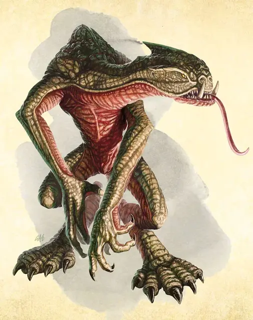

Юань-ти страж выводка
Yuan-ti Broodguard
Средний Гуманоид (Юань-ти), нейтрально-злой

Класс Доспеха 14 (природный доспех)
Хиты 45 (7к8 + 14)
Скорость 30 футов
| мод | спас | ||
|---|---|---|---|
| СИЛ | 15 | +2 | +4 |
| ЛОВ | 14 | +2 | +4 |
| ТЕЛ | 14 | +2 | +2 |
| мод | спас | ||
|---|---|---|---|
| ИНТ | 6 | −2 | −2 |
| МДР | 11 | +0 | +2 |
| ХАР | 4 | −3 | −3 |
Навыки Восприятие +2
Иммунитет к урону яд
Иммунитет к состояниям отравление
Чувства тёмное зрение 60 футов, пассивное Восприятие 12
Языки Общий, Бездны, Драконий
Опасность 2 (450 опыта)
Бонус мастерства +2
Среда обитания Лес, Подземье, Пустыня
Особенности
Сопротивление магии. Страж выводка имеет преимущество на спасброски против очарования и магия не может его парализовать.
Безрассудство. В начале своего хода страж выводка может получить преимущество на все броски на попадание рукопашными атаками оружием во время этого хода, но атаки на попадание по нему получают преимущество до начала его следующего хода.
Действия
Мультиатака. Страж выводка совершает три атаки: одну укусом и две когтями.
Укус. . Рукопашная атака оружием: +4 к попаданию, досягаемость 5 футов, одна цель. Попадание: 6 (1к8 + 2) колющего урона.
Когти. . Рукопашная атака оружием: +4 к попаданию, досягаемость 5 футов, одна цель. Попадание: 5 (1к6 + 2) рубящего урона.
Описание
Стражи выводка – гуманоиды, которых юань–ти превратили в глуповатых, чешуйчатых существ, которые выполняют приказы своих хозяев. Процесс трансформации искажает не только тело, но и ум, заставляя прошедшего его инстинктивно подчиняться любому юань–ти, и наполняться злобой при виде нерептилоидных существ.
Не смотря на то, что у стражей выводка низкий интеллект, они могут выполнять простые, но важные для общества задачи, такие как охрана яиц или патрулирование. Юань–ти называют стражей выводка «хисташии» что значит «хранители яиц».
Больше не человек. Большинство стражей выводка делается из плененных людей, которых вынуждают пить магическое варево, которое делает их беспомощными и неспособными противостоять неминуемому. Человек, превращенный в стража выводка теряет всякое подобие того, кем был раньше и даже его происхождение едва заметно. Стражи выводка безволосы, поджары, с желтовато–зеленой чешуйчатой шкурой. Их бисеринки глаз налиты кровью, язык раздвоен, и от них слегка пахнет гниющим мясом. Они могут говорить, но редко это делают, предпочитая шипение и гортанные звуки.
Создание стража выводка
Юань–ти создают стражей выводков из захваченных гуманоидов. Каждому из них дается выпить специальное зелье, которое делает его недееспособным и за 1к6+6 дней превращает в стража выводка. Существо, которое заставляют выпить зелье, может сделать спасбросок Телосложения Сл 15; в случае успеха оно получает 14 (4к6) урона ядом и не подвергается иным воздействиям.
До завершения трансформации такие заклинания как малое восстановление [lesser restoration] или снятие проклятья [remove curse] могут остановить трансформацию в любое время, пока она не завершена. Если процесс завершен, только заклинание исполнение желаний [wish] может обратить эффект.
См. дополнительно статью: "Бестиарий: Юань-ти"